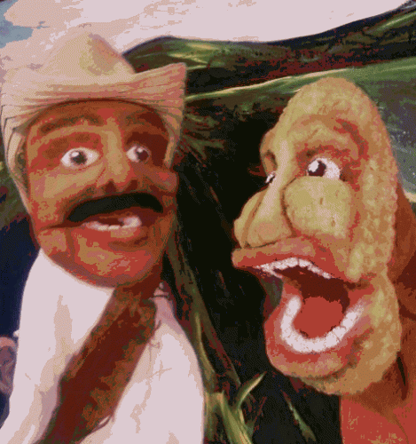
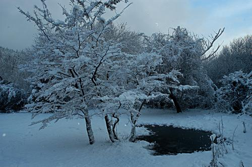

Navigation

User login
Field Glossary

English-Spanish Dictionary for Sustainable Agriculture
Current Project Profiles
NOT A KERNEL TO EAT
"It was the first puppet show I liked." - Brian Noy, Augsburg College

Not a Kernel to Eat is the story of Paco, a Mexican farmer, as he loves and loses his corn. Through battles with herbicide, water use, and temptations to buy a new HDTV with windfall GMO corn profits, our hero searches for redemption and seeds he can trust.
SPANISH FOR SUSTAINABLE LIVING - WINTER 2008
Next Spanish for Sustainability Movie Night: Feb 18
Movie-Study Workshop!
Permaculture and Natural Building Session. Vocabulary, context, and watching a video from the Centro de Investigación, Desarrollo y Enseñanza en Permacultura (CIDEP)
in Patagonia, Argentina. Learn not only how to decode Argentinian
Spanish, but practical skills and ideas from some southern-hemisphere
innovators, and a lot of good vocabulary. 30 minute lesson, followed by
30 min. video, and another 30 min. lesson/conversation/exercise.
Level: Advanced Beginner through Advanced Intermediate.
MADERAS FARM SCHOOL and ROSAS DE VOLCANES
Two Land-Based Initiatives in Nicaragua

A collaborative of single women working together to increase economic opportunity through land-based micro-enterprise. A farm school pledged to develop local capacity for restoring agricultural biodiversity.
Two projects addressing rural poverty in Nicaragua through leadership training and sustainable, subistence-level horticulture.
ENGLISH-SPANISH SUSTAINABLE AGRICULTURE DICTIONARY
FEATURED BOOK: FIELD GLOSSARY / GLOSARIO DE CAMPO
Spanish and English Terms for Ecology, Agriculture and Building
160-page pocket dictionary & reference